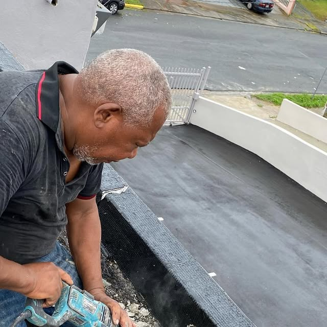
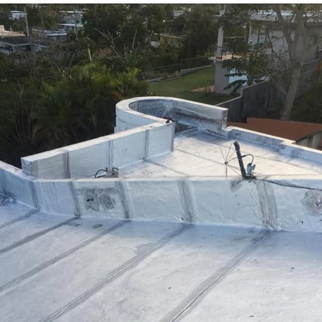
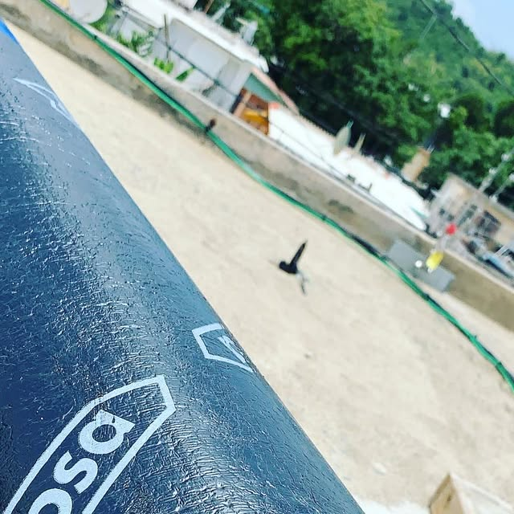
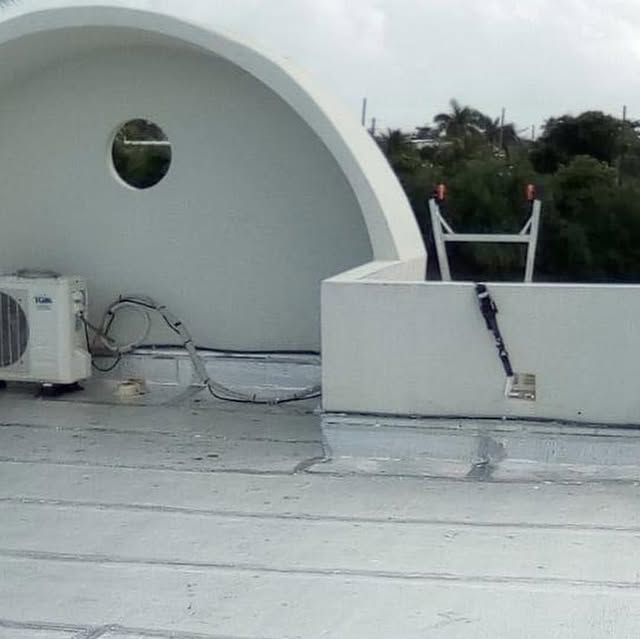
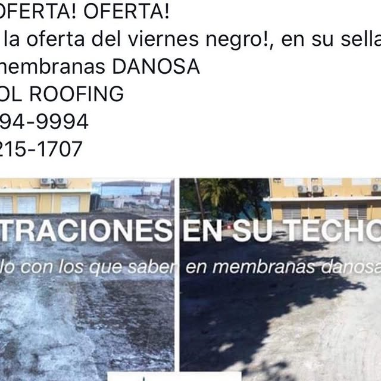

San Juan · Puerto Rico
EL SELLADO SERIO QUE TU TECHO MERECE
Sellado con membranas Danosa, corrección de desagües y preparación de techo. Estimados gratis en toda la isla, con certificación DACO.
Estimados gratis en toda la isla · Certificados DACO
San Juan · Puerto Rico
Sellado con membranas Danosa, corrección de desagües y preparación de techo. Estimados gratis en toda la isla, con certificación DACO.
Estimados gratis en toda la isla · Certificados DACO
Lo que hacemos

Instalación profesional de membranas asfálticas Danosa.

Remoción de membrana vieja y preparación correcta del techo.

Arreglo de desagües para que el agua drene sin empozarse.

Visita y cotización sin costo en cualquier pueblo de la isla.
Empresa certificada, trabajo serio y documentado.
Galería



Quiénes somos
Capitol Roofing PR: sellado de techos con membranas Danosa, corrección de desagües y preparación de techo en San Juan. Estimados gratis en toda la isla. Certificados DACO. Trabajos reales documentados: remoción de membrana vieja, instalación de membrana nueva y techos terminados con desagües corregidos.
Llamar 787-215-1707Preguntas frecuentes
Estamos en San Juan, Puerto Rico.
Sellado con membranas Danosa y más: Membranas Danosa, Preparación de techo, Corrección de desagües.
Escríbenos por WhatsApp al 787-215-1707 o llena el formulario de contacto y te respondemos por WhatsApp.
Sí, síguenos en Instagram como @capitolroofingpr.
Sí, estimados gratis en toda la isla. Certificados DACO: 787-215-1707.
Atentamente
Sellado con membranas Danosa · @capitolroofingpr · San Juan, Puerto Rico